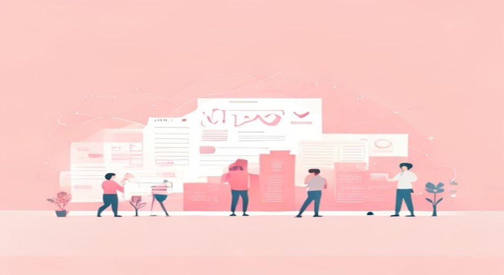

Del marketing clásico al digital: cómo el Marketing Mix (4P → 7P → 4C) integra lo digital, qué tendencias marcan hoy el sector (IA, comercio social, privacy-first) y cómo planificar el mensaje de marca.

Del marketing tradicional al digital y social.
El marketing ya no es un altavoz: es una conversación constante entre marca y persona, orquestada con datos, canales digitales y un mensaje que debe ser coherente, ético y medible.
🧠 Los conceptos
Despliega cada tarjeta, léela con calma y márcala como entendida. La barra de arriba irá subiendo.
El Marketing Mix es el conjunto de herramientas que una empresa combina para llegar a su mercado. Lo creó Jerome McCarthy en 1960 con cuatro variables, conocidas como las 4P, porque en inglés las cuatro empiezan por "P".
Estas cuatro P explican cómo la empresa decide qué vende, a qué precio, dónde y cómo lo comunica. Siguen siendo la base de cualquier estrategia de marketing, también en el entorno digital.
| P | Nombre | Qué incluye |
|---|---|---|
| Product | Producto | Características, calidad, marca, packaging, ciclo de vida |
| Price | Precio | PVP, descuentos, financiación, estrategia de precios |
| Place | Distribución | Canales de venta, logística, cobertura geográfica |
| Promotion | Comunicación | Publicidad, RRPP, promociones, venta personal |
Las 4P funcionan bien para productos físicos, pero cuando vendes un servicio (peluquería, banco, escuela de idiomas), hay más factores que importan. Por eso en 1981 Booms y Bitner ampliaron el mix a 7P añadiendo tres variables nuevas.
| P extra | Nombre | Qué incluye |
|---|---|---|
| People | Personas | El equipo que presta el servicio: su actitud, formación, trato al cliente |
| Process | Procesos | Cómo se entrega el servicio paso a paso (ej.: cómo funciona la reserva online) |
| Physical evidence | Evidencias físicas | Todo lo tangible que rodea al servicio: tienda, web, packaging, uniformes |
En 1990, Robert Lauterborn propuso mirar el mix desde el punto de vista del cliente, no de la empresa. Así nacieron las 4C: cada P se convierte en una C que representa lo que el cliente experimenta.
El marketing mix: de las 4P a las 7P.
| 4P (visión empresa) | 4C (visión cliente) | Diferencia clave |
|---|---|---|
| Product | Customer needs & wants | No "qué fabricamos" sino "qué necesita el cliente" |
| Price | Cost to customer | No "cuánto me cuesta producirlo" sino "cuánto le cuesta al cliente obtenerlo" |
| Place | Convenience | No "dónde distribuyo" sino "qué tan fácil es comprarlo para el cliente" |
| Promotion | Communication | No "qué mensajes lanzo" sino "qué conversación tengo con mi público" |
Mucha gente cree que el marketing digital es solo "hacer publicidad en Instagram". Error. Lo digital impacta las cuatro P a la vez, cambia cómo se diseña el producto, se fija el precio, se distribuye y se comunica.
Además, el marketing social añade una capa más: la conversación pública entre marca y consumidores en tiempo real, con comentarios, valoraciones y contenido generado por los usuarios.
| P clásica | Cómo la transforma lo digital |
|---|---|
| Product | Productos digitales (apps, SaaS), versiones personalizadas, co-creación con la comunidad |
| Price | Pricing dinámico (vuelos, hoteles), modelo freemium, suscripciones, comparadores online |
| Place | E-commerce, marketplaces (Amazon), venta directa al consumidor (D2C), delivery en horas |
| Promotion | SEM, SEO, social ads, influencers, content marketing, email marketing, podcast |
El sector evoluciona muy rápido. La presentación destaca cuatro grandes tendencias que marcan hoy el marketing digital y social. Son las que más caen en examen junto con las P y las C.
Tendencias: IA, comercio social y privacidad.
| Tendencia | En qué consiste | Ejemplo práctico |
|---|---|---|
| Personalización algorítmica responsable (IA) | La IA segmenta y crea contenido masivo personalizado, pero con ética y transparencia. El algoritmo no solo recomienda: explica el por qué. | ChatGPT generando textos, Spotify recomendando canciones, Netflix eligiendo tu próxima serie |
| Comercio social | La compra ocurre dentro de la red social, sin salir de ella. Integra entretenimiento, comunidad y transacción en un solo lugar. | TikTok Shop, Instagram Shopping, lives de compra en directo |
| Privacy-first | Fin de las cookies de terceros, más regulación (GDPR), y apuesta por datos zero-party (que el usuario comparte voluntariamente). | Formularios de preferencias, newsletters opt-in, encuestas de satisfacción |
| Bienestar digital | La marca se posiciona como aliada de la salud mental del usuario: diseña ritmos responsables de interacción y evita la fatiga digital. | Modo nocturno, pausas activas en apps, mensajes de uso responsable |
Antes de elegir canales hay que decidir qué se va a decir. La tecnología es solo el medio; el mensaje es el centro. Una planificación estratégica responde tres preguntas fundamentales:
Un mensaje planificado estratégicamente debe ser coherente en todos los canales (lo que llamaremos modelo POEM en T2): lo que dices en Instagram tiene que coincidir con lo que dices en la web y en el email.
El mensaje no es un eslogan improvisado. Se construye con cinco elementos que dan coherencia y fuerza a la comunicación de una marca:
| Elemento | Qué es | Ejemplo |
|---|---|---|
| Posicionamiento | El lugar mental que ocupa la marca frente a la competencia (Ries & Trout) | «Volvo = seguridad», «Red Bull = energía extrema» |
| Propuesta de valor | Beneficio diferencial: para quién, qué problema resuelve, por qué tú y no otro | «Deliveroo: tu restaurante favorito en 30 min» |
| Tono y estilo | La personalidad de la marca al hablar: cercana, técnica, divertida, seria… | Lidl usa humor; Rolex usa elegancia y exclusividad |
| Key messages | 2-3 mensajes nucleares que se repiten en todos los canales | Nike: «Just do it» (rendimiento, superación, todos pueden) |
| Storytelling | Narrativa que da sentido emocional al mensaje racional | Anuncio de Navidad de Lotería del Estado |
Comunicar no es solo informar: es convencer y movilizar. Todo mensaje persuasivo se apoya en tres dimensiones clásicas de la retórica (Aristóteles), que el marketing digital convierte en vídeos, testimonios, reseñas y demostraciones:
| Dimensión | Qué es | En marketing digital |
|---|---|---|
| Logos | Argumentos racionales, datos, beneficios concretos | «Un 94% de clientes repite» / comparativas de precio |
| Pathos | Conexión emocional, empatía, valores compartidos | Vídeos emotivos, causas sociales, historias de personas reales |
| Ethos | Credibilidad y autoridad del emisor | Reseñas verificadas, expertos, sellos de calidad, influencers especializados |
La persuasión se logra cuando los tres elementos están equilibrados y coherentes con la identidad de marca. Si abusas de uno y descuidas los otros, el mensaje falla.
En el entorno digital, el mensaje no se lanza y se olvida: se mide, se analiza y se mejora continuamente. Todo mensaje debe tener objetivos SMART (específicos, medibles, alcanzables, relevantes y con plazo).
El ciclo es siempre el mismo:
🃏 Flashcards
Toca cada tarjeta para girarla. Tapa la definición con la mano y comprueba si te la sabes.
✅ Test rápido
6 preguntas tipo examen. Elige una opción y te corrige al momento con la explicación.
⭐ Preguntas del final de la presentación
La presentación oficial del Tema 1 no incluía diapositivas de autoevaluación. Se incluyen a continuación 3 preguntas de práctica elaboradas con los conceptos clave del tema, representativas del nivel y estilo del examen.
El Marketing Mix es el conjunto de herramientas combinadas para llegar al mercado. McCarthy (1960) propuso las 4P desde la perspectiva de la empresa: Product (qué se vende), Price (a qué precio), Place (cómo y dónde se distribuye) y Promotion (cómo se comunica). En 1981, Booms y Bitner ampliaron el modelo a 7P añadiendo People, Process y Physical evidence, necesarias para el sector servicios.
El cambio de perspectiva lo introduce Lauterborn (1990) con las 4C: en lugar de pensar desde la empresa, se piensa desde el cliente. Product → Customer needs (¿qué necesita el cliente?); Price → Cost to customer (¿cuánto le cuesta obtenerlo en total?); Place → Convenience (¿qué tan fácil es acceder?); Promotion → Communication (diálogo, no monólogo). Las 4C no reemplazan a las 4P: las complementan poniendo al cliente en el centro.
En comunicación digital, la tecnología es el medio; el mensaje es el centro. Sin saber qué decir, a quién y con qué objetivo, la elección del canal es irrelevante. La planificación estratégica parte de tres preguntas: ¿qué queremos conseguir? (objetivos SMART), ¿a quién nos dirigimos? (segmentación) y ¿qué queremos que hagan? (efecto deseado).
El mensaje estratégico se construye con cinco elementos: posicionamiento (lugar mental que ocupa la marca frente a la competencia), propuesta de valor (beneficio diferencial concreto), tono y estilo (personalidad de la marca al comunicar), key messages (2-3 mensajes nucleares coherentes en todos los canales) y storytelling (narrativa emocional que da sentido al mensaje racional).
Para que el mensaje sea persuasivo debe combinar tres dimensiones clásicas: logos (argumentos racionales y datos), pathos (conexión emocional y empatía) y ethos (credibilidad y autoridad del emisor). Los tres deben estar equilibrados: el exceso de uno debilita el conjunto. Además, todo mensaje digital debe medirse (KPIs, engagement, CTR) para aprender y optimizarse en un ciclo continuo.